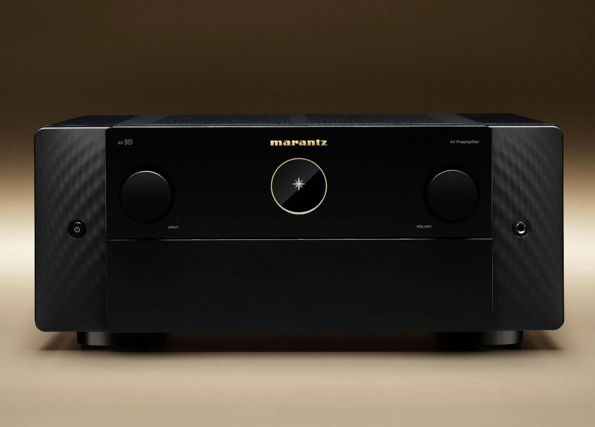

The remote is somewhere else.
You are already sitting at your computer or using your phone, but changing the receiver's volume can mean reaching for another device.
If you have never owned a home theater, an AV receiver can be an unfamiliar piece of hardware. AVR Link starts with a simple problem: a receiver is the center of the system, but controlling it often feels disconnected from the devices you already use.

In a typical home theater, multiple devices produce audio or video. The AV receiver connects those sources to the display and speakers while handling tasks such as input selection and volume control.
Sources can include a computer, streaming box, game console, disc player, or other equipment.
The receiver selects the active source, routes the signal, and controls the listening experience.
The output goes to a television or projector and a speaker system, often across several audio zones.
A receiver can sit at the center of a sophisticated setup while its primary control surface remains a separate physical remote or a manufacturer-specific interface.
You are already sitting at your computer or using your phone, but changing the receiver's volume can mean reaching for another device.
The receiver can communicate over a network, yet the control experience is often separated from the operating system and devices you're already using.
A desktop, phone, and watch can all be nearby during the same listening session, but the control experience does not have to feel fragmented.
The receiver works, but controlling it means leaving the device you're already using.
AVR Link brings receiver controls onto the Apple devices already in your workflow.
AVR Link is a native Apple control layer for compatible Denon and Marantz receivers. The interface changes with the device, while the underlying purpose stays the same: control the receiver without interrupting what you're doing.
Native interfaces designed around the capabilities of each device.
Translates user interactions into receiver commands and keeps the experience consistent across clients.
The physical AV receiver remains the system's central audio/video hub.
The ScrubHud turns a common action—changing volume—into a quick desktop interaction without opening a full remote interface.
Mac, iPhone, and Apple Watch each get an interface suited to that platform rather than a single UI squeezed across devices.
The app is built around communicating with the receiver rather than merely presenting a static remote-control mockup.
Receiver support is tracked against models that have been externally tested, reflecting the differences between real-world hardware generations.
The interesting part of AVR Link is the layer between the interface and the hardware: turning receiver-specific behavior into a coherent application that can be used from multiple Apple platforms.
AVR Link is ultimately about reducing the distance between the receiver and the person using it—without replacing the receiver, its capabilities, or the home theater around it.
Explore AVR Link View on GitHub